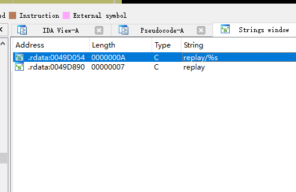
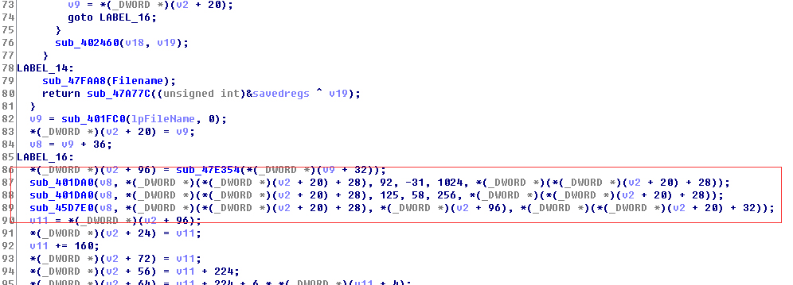
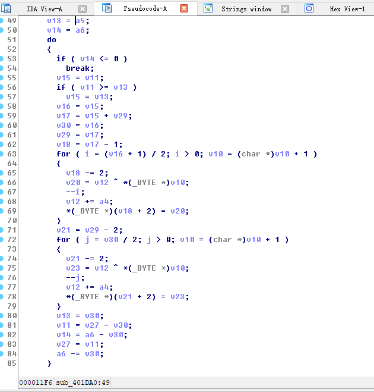
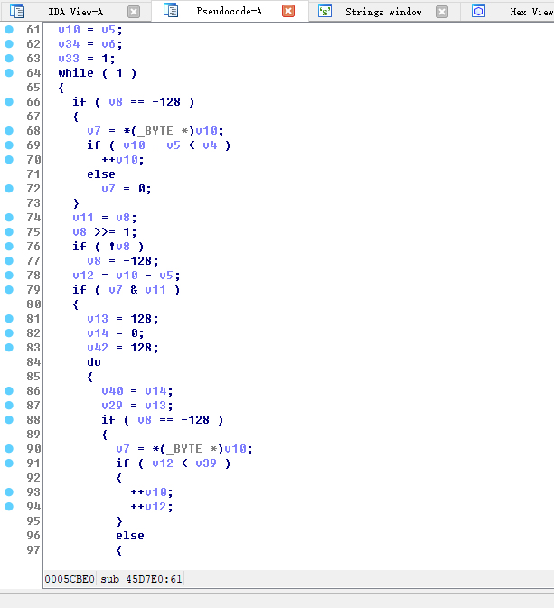
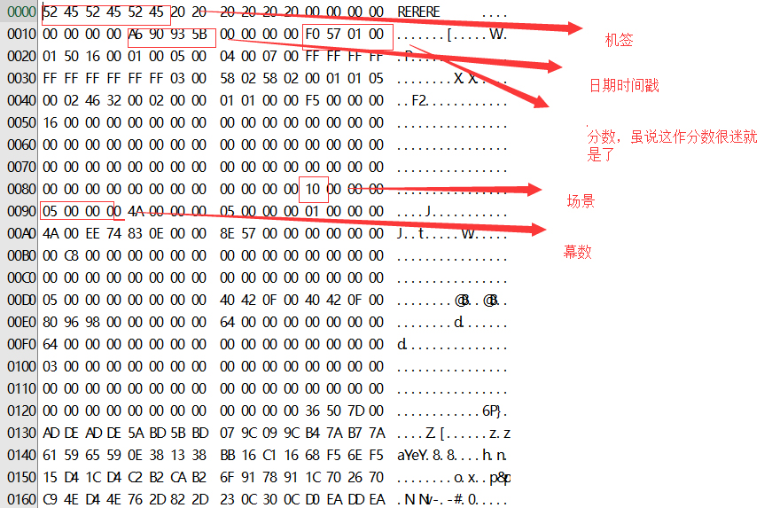
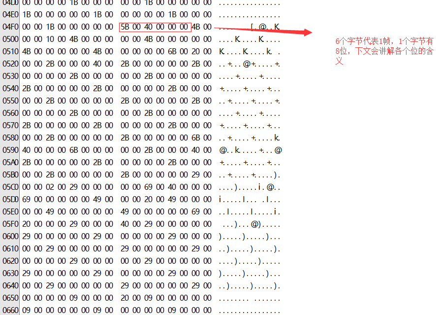
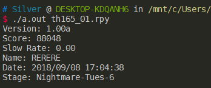
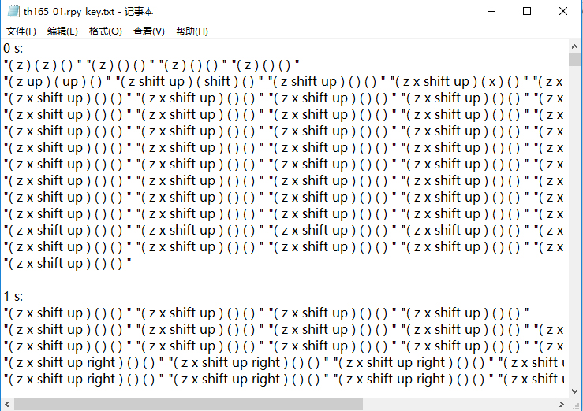

说起vim的话，配置的时候到处查资料确实不快，加上平常也不用各种插件，因此就只列出.vimrc的最基础的语句1
2
3
4
5
6
7
8
9
10
11
12
13
14
15
16
17
18
19
20
21
22
23
24
25
26
27
28
29
30
31
32set nu "设置行号
syntax on "设置语法高亮
set shiftwidth=4
set softtabstop=4
set tabstop=4 "以上三行设置tab宽度为4个空格
set expandtab "敲入tab自动转化为空格
set guifont=Dejavu_Sans_Mono:h10 "设置字体大小(这里是DejaVu Sans Mono 10号字体)
set cindent "设置c的智能缩进
filetype on "侦测文件类型
colorscheme xoria256 "设置主题(可以在官网上下载然后放入colors文件夹中)
set nocompatible "去掉有关vi的一致性
set backspace=indent,eol,start "解决backsapce键不能使用的问题
inoremap ' ''<ESC>i "自动补全'' '
inoremap " ""<ESC>i "自动补全""
inoremap ( ()<ESC>i "自动补全()
inoremap [ []<ESC>i "自动补全[]
inoremap { {}<ESC>i
inoremap {<CR> {<CR>}<ESC>O
"若按下{后立即按下回车就可以自动打出}并缩进, 否则直接在本行输出{}
nmap <C-A> ggVG "设置Ctrl+A全选
vmap <C-c> "+y "设置Ctrl+C复制
vmap <C-x> "+d "设置Ctrl+X剪切
nmap <C-S> :update<CR> "设置Ctrl+S保存
function! CleverTab()
if strpart( getline('.'), 0, col('.')-1 ) =~ '^\s*$'
return "\<Tab>"
else
return "\<C-N>"
endif
endfunction
inoremap <Tab> <C-R>=CleverTab()<CR> "tab键在文中寻找单词补全
"粘贴可以直接用p或者Shift+Insert
东方Project 16.5 replay文件解析
replay的原始文件(.rpy文件)
首先我们来看一个例子，如下图

在文件的最后，我们可以清楚地看到rep解析的各种信息，包括机签(RERERE)、日期(18/09/08)、关卡号(6)等，通过这些，网站可以正确解析出rep，但是我们的目的不仅限于此，更进一步地，我们需要解析出rep包含的最重要信息——机师在何时按了什么键。
replay的解密流程
首先找到replay字符的位置，风神录之后所有的replay解密函数均在这一块

点进去之后就会看到此字符串在44F960出现，追踪至44F960

这两个函数就是主要的解压函数了，点进去看下
401DA0(以后称作decode)

45D7E0(以后称作decompress)

是不是看着很繁琐？不过由于几乎所有replay文件共用一套解密算法中的两个函数，因此就直接用别人已经翻译好了的代码了，主要代码来自这里。
1
2
3
4
5
6
7
8
9
10
11
12
13
14
15
16
17
18
19
20
21
22
23
24
25
26
27
28
29//decode
void decode(unsigned char * buffer, int length, int block_size, unsigned char base, unsigned char add) {
unsigned char * tbuf = new unsigned char[length];
memcpy(tbuf, buffer, length);
int i, p = 0, tp1, tp2, hf, left = length;
if ((left % block_size) < (block_size / 4))
left -= left % block_size;
left -= length & 1;
while (left) {
if (left < block_size)
block_size = left;
tp1 = p + block_size - 1;
tp2 = p + block_size - 2;
hf = (block_size + (block_size & 0x1)) / 2;
for (i = 0; i < hf; ++i, ++p) {
buffer[tp1] = tbuf[p] ^ base;
base += add;
tp1 -= 2;
}
hf = block_size / 2;
for (i = 0; i < hf; ++i, ++p) {
buffer[tp2] = tbuf[p] ^ base;
base += add;
tp2 -= 2;
}
left -= block_size;
}
delete[] tbuf;
}
decompress被分成了两个函数
1 | //decompress |
解压完的replay文件(.raw)


0000 0000，从右到左依次为0~7
· 如果第0位为1，则此时Z键被按住
· 如果第1位为1，则此时X键被按住
· 如果第3位为1，则此时shift键被按住
· 如果第4位为1，则此时↑键被按住
· 如果第5位为1，则此时↓键被按住
· 如果第6位为1，则此时←键被按住
· 如果第7位为1，则此时→键被按住
因此，通过位运算，我们可以得到按键信息并输入到对应的文件
1 | char key_inf[10][10] = { |
至此，整个文件解析结束
至于解压出来的效果，就是这样了


Hello World
Welcome to Hexo! This is your very first post. Check documentation for more info. If you get any problems when using Hexo, you can find the answer in troubleshooting or you can ask me on GitHub.
Quick Start
Create a new post
1 | $ hexo new "My New Post" |
More info: Writing
Run server
1 | $ hexo server |
More info: Server
Generate static files
1 | $ hexo generate |
More info: Generating
Deploy to remote sites
1 | $ hexo deploy |
More info: Deployment